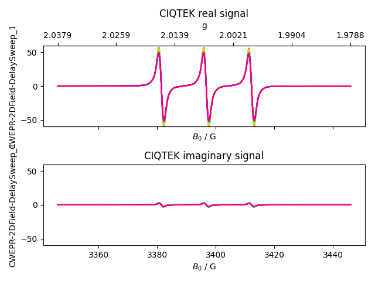
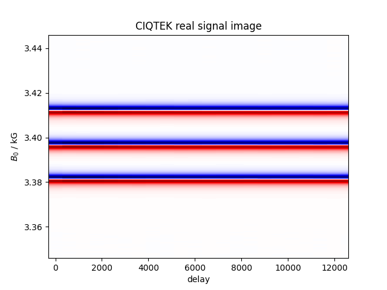

Note
Go to the end to download the full example code
CIQTEK cw ESR Data¶
Load CIQTEK JSON EPR data through pyspecdata.find_file().


import re
import matplotlib.pyplot as plt
import numpy as np
import pyspecdata as psd
Bname = r"$B_0$"
# To make the compressed version on Linux with maximum 7zip compression:
# 7z a -t7z -mx=9 384K_1mM_TEMPO_SFO5_pt5G_MAmp_25dB_100G_22scans_2D.epr.7z \
# 384K_1mM_TEMPO_SFO5_pt5G_MAmp_25dB_100G_22scans_2D.epr
d = psd.find_file(
re.escape("384K_1mM_TEMPO_SFO5_pt5G_MAmp_25dB_100G_22scans_2D.epr")
+ r"(\.7z)?$",
exp_type="ciqtek",
)
g_axis = d.get_prop("ciqtek_g_axis")
g_axis = np.asarray(g_axis)
if g_axis.ndim > 1:
g_axis = g_axis[:, 0]
field_axis = d.getaxis(Bname)
fig, (real_ax, imag_ax) = plt.subplots(2, 1, sharex=True, sharey=True)
psd.plot(d.real, ax=real_ax, alpha=0.7)
real_ax.set_title("CIQTEK real signal")
psd.plot(d.imag, ax=imag_ax, alpha=0.7)
imag_ax.set_title("CIQTEK imaginary signal")
shared_lim = max(np.max(np.abs(d.real.data)), np.max(np.abs(d.imag.data)))
for ax in [real_ax, imag_ax]:
ax.set_ylim(-shared_lim, shared_lim)
g_ax = real_ax.twiny()
g_ax.set_xlim(real_ax.get_xlim())
g_tick_idx = np.linspace(0, len(field_axis) - 1, 6, dtype=int)
g_ax.set_xticks(field_axis[g_tick_idx])
g_ax.set_xticklabels(["%0.4f" % j for j in g_axis[g_tick_idx]])
g_ax.set_xlabel("g")
fig.tight_layout()
plt.figure(2)
d.real.reorder(
[Bname, next(j for j in d.dimlabels if j != Bname)]
).pcolor(cmap="seismic", force_balanced_cmap=True)
plt.title("CIQTEK real signal image")
plt.show()
Total running time of the script: (0 minutes 1.601 seconds)